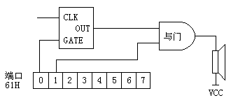
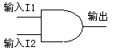

第二章中介绍了通过端口61H的bit1位发出声音的技术时曾经遗留了一个问题，那就是如何精确地控制声音的频率。本节将解决这个问题，新的程序将彻底抛弃"LOOP"指令，而应用新的方法产生具有准确频率的声音。
早期的PC系列机中有一个专门用于定时的集成电路，型号是8253/8254。它有三个通道，第一个通道用于控制系统时钟正常运转；第二个通道用于存储器刷新；这两个通道与我们现在讨论的问题无关。第三个通道是最有意思的，它通过一组电路与喇叭相联。
图4－1所示即为PC机中完整的发声电路。定时器通道3的G端与61H端口的bit0位相联，如果将61H端口的bit0位置成1，那么定时器通道3就被启动，此时将有一组信号从OUT端输出，信号的频率可以用程序控制；若61H端口bit0位为0，则定时器被关闭，OUT端就会恒定为1。

图中的"与门"电路有些不好理解，这个电路是用于实现"与逻辑"的。它有两个输入端I1、I2和一个输出端O（见图4－2），输入端与输出端的逻辑关系在表4－1中给出，可以看到，
| 输 入 | 输 出 |  图4-2 与门电路 |
|||||||||
| I1 | I2 | O | |||||||||
| 0 | 0 | 0 | |||||||||
| 0 | 1 | 0 | |||||||||
| 1 | 0 | 0 | |||||||||
| 1 | 1 | 1 | |||||||||
只有两个输入端都为1时输出才是1，这和我们前面所讲的"AND"逻辑操作是完全一样的。
此电路用在这里相当一个"可控开关"，如果将61H端口的bit0、bit1位都置成1，则相当于既打开了定时器又打开了开关，这时候定时器产生的声音信号就会送到放大器推动喇叭发声；若将bit0位置0，则定时器关闭，此时OUT端为1，这时候如果连续改变bit1位的状态，也可以从喇叭中听到声音，这就是我们在第二章中所用的方法；若将bit1位置0，则开关关闭，此时即使打开定时器也不能听到声音。
这一点可以通过DEBUG加以验证：进入DEBUG，在"－"后打入"O61 3"，即可听到喇叭发出连续的叫声。
O（OUT）命令用于直接向端口输出数据，使用很简单：O端口号 数值。和O命令相对的是I（IN）命令，I命令用于从端口取数据并显示在屏幕上，使用方法：I端口号。
向61H端口输出"03"，相当于打开定时器和开关，此时将有连续的声音发出，这个声音的频率约是896Hz，和我们刚开机时听到的蜂鸣音频率一样。
有趣的是声音一旦发出就不会停止，而且不干扰用户的任何操作，用户可以退出DEBUG去"DIR"或"FORMAT A:"，声音决不会停止也不会使机器速度变慢。
停止这种声音的唯一方法就是进入DEBUG，打入命令"O61 0（也可以是1或2）"。之所以有这种现象是因为定时器的工作并不需CPU直接参与，CPU只要给定时设定好工作状态和频率值并打开定时器，此时定时器就会自主工作，CPU即可去做别的事情。这个特性十分有用，它是实现"背景音乐"的前提。
那么如何改变声音的频率呢？请注意定时器的通道3还有一个输入端CLK，这一端输入了一个固定的信号，频率是1193181.6Hz。输出信号与此信号具有如下关系：
其中N是一个16bit数据，它的值可以由程序设定。方法很简单：将此16位数据分成高、低两个8位，先把低8位送至42H端口，紧接着再把高8位送至42H端口，输出信号的频率就会改变。我们可以试一下：
设定新的N值是300H，对应的F（OUT）是1193191.6/300H＝1553Hz。声音马上变尖了。